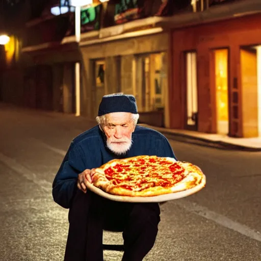
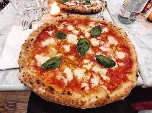

Drawing inspiration from the traditional topped
flatbreads of yore, pizza was first documented
by name in 997 CE, in a text from southern Italy
in which the son of a feudal lord pledges 12
pizzas to the local bishop as an annual homage.
The pizza we know today emerged in 18th-century Naples.

Ingredients needed:
Water
1 Ball Thin Crust Dough
⅓ Generic Pizza Sauce
¾ cup shredded mozzarella cheese or 2-3 ounces of Fresh Mozzarella
3 tablespoons Basil Pesto Sauce or Basil Cashew Pesto Sauce
Semolina flour or cornmeal, for dusting the Pizza Peel

Directions:
Preheat oven or Pizza Stone to 500°F
Make the Pizza Dough and Knead it
Prepare the Cheese by slicing it into ¼ inch thick pieces
Spread Semolina Flour or Cornmeal for Pizza Stone
Apply the Pizza Sauce and Cheese on top of the Kneaded Dough
Add Basil on top (optional)
Place the Pizza in the oven for around 15 Minutes
Take out when Crust is Golden Brown
Apply Cheese and Sauce:
References:
Shannon Jamieson. Italian Margherita Pizza. 2022. https://plumstreetcollective.com/italian-margherita-pizza/
Alexander Lee. Neapolitan pizza seller 19th Century. 2018. https://www.historytoday.com/archive/historians-cookbook/history-pizza